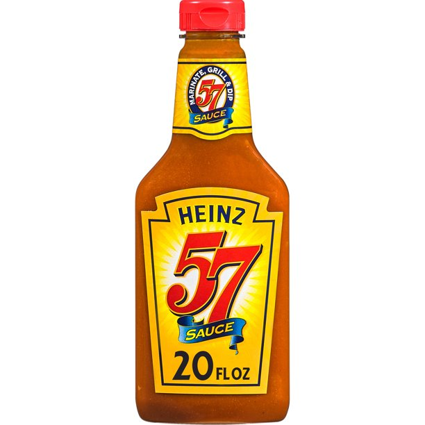

Trending Products
-

Heinz
57 Sauce
A secret blend of spices has made Heinz 57 Sauce an American favorite for over 100 years. With a unique rich flavor unequaled by any other steak sauce, it's no wonder that Heinz 57 is served in America's greatest steak houses. This multi use sauce comes ready to pour onto your favorite foods for a convenient way to ramp up flavor. Tomato puree, vinegar and spices create a zesty kick in this multi purpose sauce that contains 20 calories per serving and zero grams of fat per serving. It's the go-to steak dinner sauce, but Heinz 57 is also perfect as a sauce for pork or chicken, for meat marinating or as a dipping sauce. This 20-ounce bottle makes it easy to pour this zesty sauce. One 20 oz bottle of Heinz 57 Sauce Heinz 57 Sauce uses a secret blend of spices to make it a favorite for over 100 years Zesty multi use sauce uses delicious ingredients Thick ready-to-use sauce is versatile enough for grilling, marinating and dipping Made with tomato puree, vinegar and a secret blend of spices with 20 calories per serving Use as a sauce for chicken, steak and pork Packaged in a bottle for easy dispensing